공조냉동기계기능사 (2015-01-25 기출문제)
1과목: 공조냉동안전관리
1. 다음 중 정전기 방전의 종류가 아닌 것은?
- 불꽃 방전
- 연면 방전
- 분기 방전
- 코로나 방전
(정답률: 63%)

2. 보일러 운전 중 과열에 의한 사고를 방지하기 위한 사항으로 틀린 것은?
- 보일러의 수위가 안전저수면 이하가 되지 않도록 한다.
- 보일러수의 순환을 교란시키지 말아야 한다.
- 보일러 전열면을 국부적으로 과열하여 운전한다.
- 보일러수가 농축되지 않게 운전한다.
(정답률: 92%)
3. 보일러의 수압시험을 하는 목적으로 가장 거리가 먼 것은?
- 균열의 유무를 조사
- 각종 덮개를 장치한 후의 기밀도 확인
- 이음부의 누설정도 확인
- 각종 스테이의 효력을 지시
(정답률: 83%)
4. 응축압력이 지나치게 내려가는 것을 방지하기 위한 조치방법 중 틀린 것은?
- 송풍기의 풍량을 조절한다.
- 송풍기 출구에 댐퍼를 설치하여 풍량을 조절한다.
- 수냉식일 경우 냉각수의 공급을 증가시킨다.
- 수냉식일 경우 냉각수의 온도를 높게 유지한다.
(정답률: 52%)
5. 작업 시 사용하는 해머의 조건으로 적절한 것은?
- 쐐기가 없는 것
- 타격면에 흠이 있는 것
- 타격면이 평탄할 것
- 머리가 깨어진 것
(정답률: 91%)
6. 팽창밸브가 냉동 용량에 비하여 너무 작을 때 일어나는 현상은?
- 증발압력 상승
- 압축기 소요동력 감소
- 소요전류 증대
- 압축기 흡입가스 과열
(정답률: 51%)
7. 보일러의 운전 중 파열사고의 원인으로 가장 거리가 먼 것은?
- 수위상승
- 강도의 부족
- 취급의 불량
- 계기류 고장
(정답률: 71%)
8. 전기화재의 원인으로 고압선과 저압선이 나란히 설치된 경우, 변압기의 1, 2차 코일의 절연파괴로 인하여 발생하는 것은?
- 단락
- 지락
- 혼촉
- 누전
(정답률: 75%)
9. 기계 작업 시 일반적인 안전에 대한 설명 중 틀린 것은?
- 취급자나 보조자 이외에는 사용하지 않도록 한다.
- 칩이나 절삭된 물품에 손을 대지 않는다.
- 사용법을 확실히 모르면 손으로 움직여 본다.
- 기계는 사용 전에 점검한다.
(정답률: 95%)
10. 보호구의 적절한 선정 및 사용 방법에 대한 설명 중 틀린 것은?
- 작업에 적절한 보호구를 선정한다.
- 작업장에는 필요한 수량의 보호구를 비치한다.
- 보호구는 방호 성능이 없도록 품질이 양호해야 한다.
- 보호구는 착용이 간편해야 한다.
(정답률: 91%)
11. 냉동기를 운전하기 전에 준비해야 할 사항으로 틀린 것은?
- 압축기 유면 및 냉매량을 확인한다.
- 응축기, 유냉각기의 냉각수 입·출구밸브를 연다.
- 냉각수 펌프를 운전하여 응축기 및 실린더 자켓의 통수를 확인한다.
- 암모니아 냉동기의 경우는 오일 히터를 기동 30~60분 전에 통전한다.
(정답률: 72%)
12. 냉동기 검사에 합격한 냉동기 용기에 반드시 각인해야 할 사항은?
- 제조업체의 전화번호
- 용기의 번호
- 제조업체의 등록번호
- 제조업체의 주소
(정답률: 79%)
13. 가스용접 작업 시 주의사항이 아닌 것은?
- 용기밸브는 서서히 열고 닫는다.
- 용접 전에 소화기 및 방화사를 준비한다.
- 용접 전에 전격방지기 설치 유무를 확인한다.
- 역화방지를 위하여 안전기를 사용한다.
(정답률: 76%)
14. 전기 기기의 방폭구조의 형태가 아닌 것은?
- 내압 방폭구조
- 안전증 방폭구조
- 유입 방폭구조
- 차동 방폭구조
(정답률: 68%)
15. 수공구 사용에 대한 안전사항 중 틀린 것은?
- 공구함에 정리를 하면서 사용한다.
- 결함이 없는 완전한 공구를 사용한다.
- 작업완료 시 공구의 수량과 훼손 유무를 확인한다.
- 불량공구는 사용자가 임시 조치하여 사용한다.
(정답률: 93%)
2과목: 냉동기계
16. 표준냉동사이클로 운전될 경우, 다음 왕복동 압축기용 냉매 중 토출가스 온도가 제일 높은 것은?
- 암모니아
- R-22
- R-12
- R-500
(정답률: 71%)
17. 증기압축식 냉동사이클의 압축 과정 동안 냉매의 상태변화로 틀린 것은?
- 압력 상승
- 온도 상승
- 엔탈피 증가
- 비체적 증가
(정답률: 59%)
18. 다음 중 동관작업용 공구가 아닌 것은?
- 익스펜더
- 티뽑기
- 플레어링 툴
- 클립
(정답률: 80%)
19. 유체의 입구와 출구의 각이 직각이며, 주로 방열기의 입구 연결밸브나 보일러 주증기 밸브로 사용되는 밸브는?
- 슬로우스 밸브(Sluice valve)
- 체크밸브(Check valve)
- 앵글밸브(Angle valve)
- 게이트밸브(Gate valve)
(정답률: 73%)
20. 횡형 쉘 앤 튜브(Horizontal shell and tube)식 응축기에 부착되지 않는 것은?
- 역지 밸브
- 공기배출구
- 물 드레인 밸브
- 냉각수 배관 출·입구
(정답률: 65%)
21. 냉동장치의 냉매배관에서 흡입관의 시공상 주의점으로 틀린 것은?
- 두 개의 흐름이 합류하는 곳은 T이음으로 연결한다.
- 압축기가 증발기보다 밑에 있는 경우, 흡입관은 증발기 상부보다 높은 위치까지 올린 후 압축기로 가게 한다.
- 흡입관의 입상이 매우 길 때는 약 10m마다 중간에 트랩을 설치한다.
- 각각의 증발기에서 흡인 주관으로 들어가는 관은 주관 위에서 접속한다.
(정답률: 75%)
22. 압축기의 상부간격(Top Clearance)이 크면 냉동 장치에 어떤 영향을 주는가?
- 토출가스 온도가 낮아진다.
- 체적 효율이 상승한다.
- 윤활유가 열화되기 쉽다.
- 냉동능력이 증가한다.
(정답률: 61%)
23. 200V, 300W의 전열기를 100V 전압에서 사용할 경우 소비전력은?(문제 오류로 가답안 발표시 2번으로 발표되었지만 확정답안 발표시 정항 정답 처리 되었습니다. 여기서는 2번을 누르면 정답 처리 됩니다.)
- 약 50kW
- 약 75kW
- 약 100kW
- 약 150kW
(정답률: 80%)
24. 흡수식 냉동기에 사용되는 흡수제의 구비조건으로 틀린 것은?
- 용액의 증기압이 낮을 것
- 농도변화에 의한 증기압의 변화가 클 것
- 재생에 많은 열량을 필요로 하지 않을 것
- 점도가 높지 않을 것
(정답률: 73%)
25. 냉동장치의 능력을 나타내는 단위로서 냉동톤(RT)이 있다. 1냉동톤에 대한 설명으로 옳은 것은?
- 0℃의 물 1kg을 24시간에 0℃의 얼음으로 만드는데 필요한 열량
- 0℃의 물 1ton을 24시간에 0℃의 얼음으로 만드는데 필요한 열량
- 0℃의 물 1kg을 1시간에 0℃의 얼음으로 만드는데 필요한 열량
- 0℃의 물 1ton을 1시간에 0℃의 얼음으로 만드는데 필요한 열량
(정답률: 82%)
26. 암모니아 냉매의 특성으로 틀린 것은?
- 물에 잘 용해된다.
- 밀폐형 압축기에 적합한 냉매이다.
- 다른 냉매보다 냉동효과가 크다.
- 가연성으로 폭발의 위험이 있다.
(정답률: 70%)
27. 동관에 관한 설명 중 틀린 것은?
- 전기 및 열전도율이 좋다.
- 가볍고 가공이 용이하며 일반적으로 동파에 강하다.
- 산성에는 내식성이 강하고 알칼리성에는 심하게 침식된다.
- 전연성이 풍부하고 마찰저항이 적다.
(정답률: 79%)
28. 회전 날개형 압축기에서 회전 날개의 부착은?
- 스프링 힘에 의하여 실린더에 부착한다.
- 원심력에 의하여 실린더에 부착한다.
- 고압에 의하여 실린더에 부착한다.
- 무게에 의하여 실린더에 부착한다.
(정답률: 88%)
29. 회전식 압축기의 특징에 관한 설명으로 틀린 것은?
- 조립이나 조정에 있어서 고도의 정밀도가 요구된다.
- 대형 압축기와 저온용 압축기에 많이 사용한다.
- 왕복동식보다 부품수가 적으며 흡입밸브가 없다.
- 압축이 연속적으로 이루어져 진공펌프로도 사용된다.
(정답률: 65%)
30. 고체 냉각식 동결장치가 아닌 것은?
- 스파이럴식 동결장치
- 배치식 콘택트 프리져 동결장치
- 연속식 싱글 스틸 벨트 프리져 동결장치
- 드럼 프리져 동결장치
(정답률: 67%)
31. 흡수식 냉동장치의 주요구성 요소가 아닌 것은?
- 재생기
- 흡수기
- 이젝터
- 용액펌프
(정답률: 74%)
32. 단단 증기압축기 냉동사이클에서 건조압축과 비교하여 과열압축이 일어날 경우 나타나는 현상으로 틀린 것은?
- 압축기 소비동력이 커진다.
- 비체적이 커진다.
- 냉매 순환량이 증가한다.
- 토출가스의 온도가 높아진다.
(정답률: 50%)
33. 다음 중 p-h선도(Mollier Diagram)에서 등온선을 나타낸 것은?
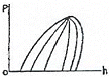
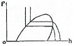
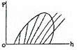
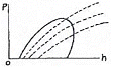
(정답률: 76%)
34. 냉동기의 2차 냉매인 브라인 구비조건으로 틀린 것은?
- 낮은 응고점으로 낮은 온도에서도 동결되지 않을 것
- 비중이 적당하고 점도가 낮을 것
- 비열이 크고 열전달 특성이 좋을 것
- 증발이 쉽게 되고 잠열이 클 것
(정답률: 64%)
35. 두 전하 사이에 작용하는 힘의 크기는 두 전하 세기의 곱에 비례하고, 두 전하 사이의 거리의 제곱에 반비례하는 법칙은?
- 옴의 법칙
- 쿨롱의 법칙
- 패러데이의 법칙
- 키르히호프의 법칙
(정답률: 68%)
36. 2단압축 1단팽창 사이클에서 중간냉각기 주위에 연결되는 장치로 적당하지 않은 것은?
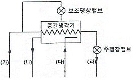
- (가) : 수액기
- (나) : 고단측 압축
- (다) : 응축기
- (라) : 증발기
(정답률: 63%)
37. 지열을 이용하는 열펌프(Heat Pump)의 종류로 거리가 먼 것은?
- 엔진 구동 열펌프
- 지하수 이용 열펌프
- 지표수 이용 열펌프
- 토양 이용 열펌프
(정답률: 83%)
38. 냉동사이클에서 응축온도는 일정하게 하고 증발온도를 저하시키면 일어나는 현상으로 틀린 것은?
- 냉동능력이 감소한다.
- 성능계수가 저하한다.
- 압축기의 토출온도가 감소한다.
- 압축비가 증가한다.
(정답률: 47%)
39. 점토 또는 탄산마그네슘을 가하여 형틀에 압축 성형한 것으로 다른 보온재에 비해 단열효과가 떨어져 두껍게 시공하며, 500℃ 이하의 파이프, 탱크노벽 등의 보온에 사용하는 것은?
- 규조토
- 합성수지 패킹
- 석면
- 오일시일 패킹
(정답률: 76%)
40. 액체가 기체로 변할 때의 열은?
- 승화열
- 응축열
- 증발열
- 융해열
(정답률: 79%)
41. 다음 그림과 같이 15A 강관을 45° 엘보에 동일부속 나사 연결할 때 관의 실제 소요길이는? (단, 엘보중심 길이21mm, 나사물림 길이 11mm이다.)
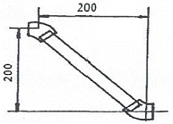
- 약 255.8mm
- 약 258.8mm
- 약 274.8mm
- 약 262.8mm
(정답률: 48%)
42. 기준냉동사이클에 의해 작동되는 냉동장치의 운전 상태에 대한 설명 중 옳은 것은?
- 증발기 내의 액냉매는 피냉각 물체로부터 열을 흡수함으로써 증발기 내를 흘러감에 따라 온도가 상승한다.
- 응축온도는 냉각수 입구온도보다 높다.
- 팽창과정 동안 냉매는 단열팽창하므로 엔탈피가 증가한다.
- 압축기 토출 직후의 증기온도는 응축과정 중의 냉매 온도보다 낮다.
(정답률: 45%)
43. 표준냉동사이클의 p-h(압력-엔탈피)선도에 대한 설명으로 틀린 것은?
- 응축과정에서는 압력이 일정하다.
- 압축과정에서는 엔트로피가 일정하다.
- 증발과정에서는 온도와 압력이 일정하다.
- 팽창과정에서는 엔탈피와 압력이 일정하다.
(정답률: 50%)
44. 냉동장치의 압축기에서 가장 이상적인 압축과정은?
- 등온 압축
- 등엔트로피 압축
- 등압 압축
- 등엔탈피 압축
(정답률: 72%)
45. 다음은 NH3 표준냉동사이클의 P-h선도이다. 플래시 가스 열량(kcal/kg)은 얼마인가?
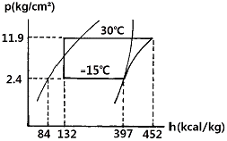
- 48
- 55
- 313
- 368
(정답률: 63%)
3과목: 공기조화
46. 15℃의 공기 15㎏과 30℃의 공기 5㎏을 혼합할 때 혼합 후의 공기온도는?
- 약 22.5℃
- 약 20℃
- 약 19.2℃
- 약 18.7℃
(정답률: 46%)
47. 동절기의 가열코일의 동결방지 방법으로 틀린 것은?
- 온수코일은 야간 운전정지 중 순환펌프를 운전한다.
- 운전 중에는 전열교환기를 사용하여 외기를 예열하여 도입한다.
- 외기와 환기가 혼합되지 않도록 별도의 통로를 만든다.
- 증기코일의 경우 0.5㎏/cm2 이상의 증기를 사용하고 코일 내에 응축수가 고이지 않도록 한다.
(정답률: 59%)
48. 송풍기의 효율을 표시하는데 사용되는 정압효율에 대한 정의로 옳은 것은?
- 팬의 축 동력에 대한 공기의 저항력
- 팬의 축 동력에 대한 공기의 정압 동력
- 공기의 저항력에 대한 팬의 축 동력
- 공기의 정압 동력에 대한 팬의 축 동력
(정답률: 66%)
49. 노통 연관 보일러에 대한 설명으로 틀린 것은?
- 노통 보일러와 연관 보일러의 장점을 혼합한 보일러이다.
- 보유수량에 비해 보일러 열효율이 80~85% 정도로 좋다.
- 형체에 전열면적이 크다.
- 구조상 고압, 대용량에 적합하다.
(정답률: 65%)
50. 공기조화에 사용되는 온도 중 사람이 느끼는 감각에 대한 온도, 습도, 기류의 영향을 하나로 모아 만든 쾌감의 지표는?
- 유효온도(effective temperature : ET)
- 흑구온도(globe temperature : GT)
- 평균복사온도(mean radiant temperature : MRT)
- 작용온도(operation temperature : OT)
(정답률: 80%)
51. 핀(fin)이 붙은 튜브형 코일을 강판형 박스에 넣은 것으로 대류를 이용한 방열기는?
- 콘벡터(convector)
- 팬코일 유닛(fan coil unit)
- 유닛 히터(unit heater)
- 라디에이터(radiator)
(정답률: 53%)
52. 단일 덕트 방식의 특징으로 틀린 것은?
- 단일 덕트 스페이스가 비교적 크게 된다.
- 외기 냉방운전이 가능하다.
- 고성능 공기정화장치의 설치가 불가능하다.
- 공조기가 집중되어 있으므로 보수관리가 용이하다.
(정답률: 48%)
53. 건축물에서 외기와 접하지 않는 내벽, 내창, 천정 등에서의 손실열량을 계산할 때 관계없는 것은?
- 열관류율
- 면적
- 인접시과 온도차
- 방위계수
(정답률: 74%)
54. 공기조화방식 중에서 외기도입을 하지 않아 덕트 설비가 필요 없는 방식은?
- 팬코일 유닛방식
- 유인 유닛방식
- 각층 유닛방식
- 멀티존 방식
(정답률: 63%)
55. 다음 그림에서 설명하고 있는 냉방 부하의 변화요인은?
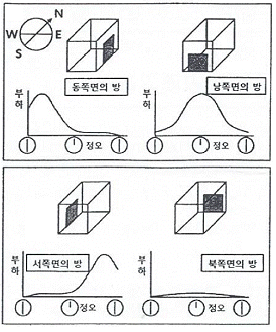
- 방의 크기
- 방의 방위
- 단열재의 두께
- 단열재의 종류
(정답률: 86%)
56. 개별 공조방식이 아닌 것은?
- 패키지방식
- 룸쿨러방식
- 멀티유닛방식
- 팬코일유닛방식
(정답률: 58%)
57. 판형 열교환기에 관한 설명 중 틀린 것은?
- 열전달 효율이 높아 온도차가 작은 유체 간의 열교환에 매우 효과적이다.
- 전열판에 요철 형태를 성형시켜 사용하므로 유체의 압력손실이 크다.
- 셸튜브형에 비해 열관류율이 매우 높으므로 전열면적을 줄일 수 있다.
- 다수의 전열판을 겹쳐 놓고 볼트로 고정시키므로 전열면의 점검 및 청소가 불편하다.
(정답률: 55%)
58. 난방 방식의 분류에서 간접 난방에 해당하는 것은?
- 온수난방
- 증기난방
- 복사난방
- 히트펌프난방
(정답률: 52%)
59. 다음의 공기선도에서 (2)에서 (1)로 냉각, 감습을 할 때 현열비(SHF)의 값을 식으로 나타낸 것 중 옳은 것은?
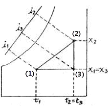
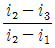
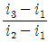
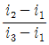
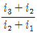
(정답률: 59%)
60. 덕트 속에 흐르는 공기의 평균 유속 10m/s, 공기의 비중량 1.2kgf/m3, 중력 가속도가 9.8m/S3일 때 동압은?
- 약 3mmAq
- 약 4mmAq
- 약 5mmAq
- 약 6mmAq
(정답률: 42%)